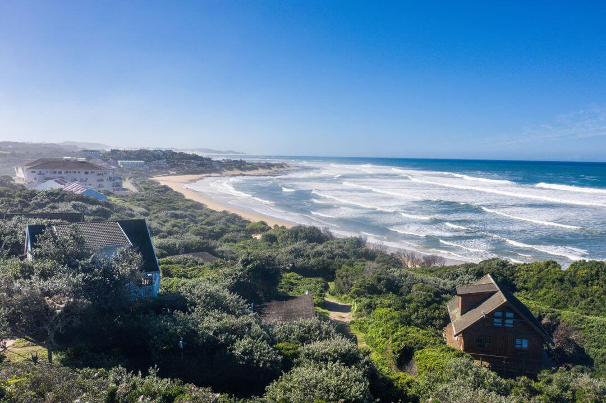

<div class="page-padding">
  <div class="container-large">
    <div class="padding-vertical padding-xhuge">
      <div class="w-layout-grid home-about_component">
        <div id="w-node-_4b62b8a9-5ef0-c19c-abeb-2462029e61b0-67cf3725"
             class="home-about_image-wrapper">
          </div>
        <div id="w-node-_4b62b8a9-5ef0-c19c-abeb-2462029e61b2-67cf3725"
             class="home-about_content">
          <div class="margin-bottom margin-small">
            <h2>Providing holiday accommodation in Port Alfred since 1963</h2>
          </div>
          <p class="text-size-medium">All our beach cottages, log and vermont chalets have been strategically
            placed amongst the natural dune vegetation to ensure each unit&#x27;s privacy.<br><br>With no roads
            between Spinning Reel and the beach, the cottages and chalets are literally a stone’s throw from the
            beach.</p>
          <div class="margin-top margin-medium">
            <div class="button-row">
              <a routerLink="/booking"
                 class="button w-button">Book now</a>
            </div>
          </div>
        </div>
      </div>
    </div>
  </div>
</div>
